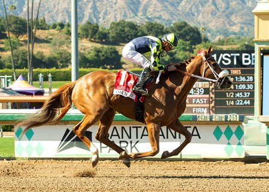

Om N Joy sorprende en el GII Santa Margarita Stakes de Santa Anita
La potranca californiana Om N Joy, hija de Om, conquistó el GII Santa Margarita Stakes disputado el sábado en el hipódromo de Santa Anita, superando a las favoritas en una jornada marcada por la sorpresa.

Om N Joy, potranca de cuatro años criada en California, firmó una actuación sobresaliente en el GII Santa Margarita Stakes, celebrado este sábado en Santa Anita. La hija de Om, salida de Margie's Minute por Afleet Alex, desbarató los pronósticos al imponerse sobre rivales de mayor cartel en una carrera que partía con otras favoritas más destacadas.
Entre las derrotadas figuraba Seismic Beauty, hija de Uncle Mo adquirida por 2,5 millones de dólares en la subasta Fasig-Tipton November, que partía como una de las principales candidatas al triunfo. La victoria de Om N Joy representa un nuevo capítulo para la cría californiana en el circuito de Grupo II, categoría de máxima exigencia en el turf estadounidense.
El Santa Margarita Stakes se disputa anualmente en Santa Anita y forma parte del calendario destacado del hipódromo californiano, reservado a ejemplares de cuatro años y más.
— Redacción de Galope al Día